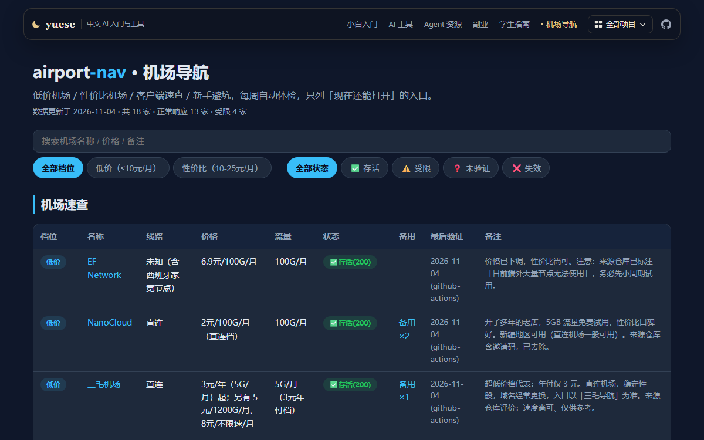

先能上网，再装环境
科学上网、Git / Python / Node / Docker，每一步都告诉你怎么验证装好了。
按你现在的状态选一条，不用全看。
科学上网、Git / Python / Node / Docker，每一步都告诉你怎么验证装好了。
48 款 AI 客户端的官方地址、按架构选版本，还有 Agent 与 Skills 的中文索引。
学生阶段的决策账本，以及 20 条可执行的 AI 副业路径，每条都标证据等级。
7 个仓库，都是自己用着顺手才做的，没有一个是练手项目。
写给纯小白的计算机入门：科学上网 + Windows 环境部署。每章只回答装什么、怎么装、怎么确认装好了。
打开六步把环境、网络、工具、Agent、副业和算账串成一条路径，附一键拉取脚本。
打开48 款 AI 工具的官方地址，按架构自动选版本，下载后校验 SHA256，链接每周体检。
打开编码代理、Skills、模型网关和免费额度资源的中文索引，32 条，链接每周体检。
打开20 条可执行路径，成本、收益、证据等级和风险逐条写明，不喊“月入十万”。
打开18–25 岁的成本收益账本，19 章 106 条，每条标证据等级、出处和可逆性。
打开
低价机场入口与客户端速查，每周自动体检，只记录能不能打开，不做推荐。
打开不是“看起来很完整”，而是每一处都能查、能跑、能复现。
链接体检、版本检测、站点构建、内容发布，全部交给 GitHub Actions。
查不到就写查不到，没有统计就不写百分比。
没覆盖到的部分明说没覆盖，不用“基本完整”糊过去。
每个结论都能点回官方原文，每个下载都能对上哈希。
我是 yuese。这些项目都是自己用着顺手才做的。如果哪个帮到你，去 GitHub 点个 Star 就是最好的支持。